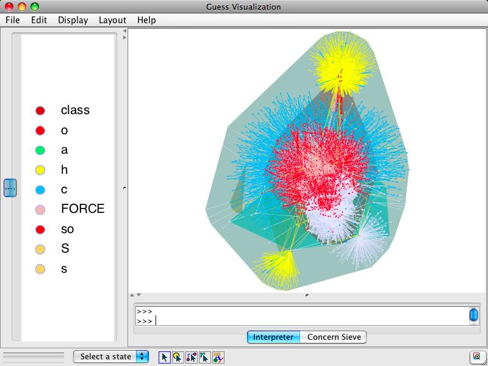
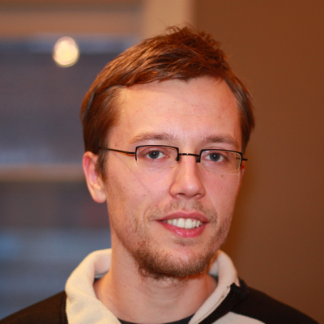
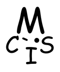

A new start at Queen's University!

Amidst the current pandemic, the MCIS lab has relocated to Queen's University's School of Computing, in the sprawling city of Kingston, Ontario, where Dr. Adams has started a new associate prof position! Lab members currently are spread (virtually) across the Polytechnique Montreal and Queen's locations, eventually converging towards Queen's. Looking forward towards continuing ongoing collaborations and starting up new endeavours!
MSR 2014 Distinguished Paper Award!

Our paper on The Impact of Code Review Coverage and Code Review Participation on Software Quality: A Case Study of the Qt, VTK, and ITK Projects has received one out of two Distinguished Paper Awards at the 11th Working Conference on Mining Software Repositories! The paper is part of Shane McIntosh's PhD work, in collaboration with Dr. Yasutaka Kamei and Dr. Ahmed E. Hassan. Shane will present the paper on June 1st in Hyderabad, India, so you still have time to apply for a visa and book a flight, you won't regret it ;-)
MAKAO 1.8 Online, Major Revamp!
Are you struggling with your Makefiles? Fear not, version 1.8 of MAKAO will make analysis of your build system as streamlined as never before! Visualize your build dependency graph, filter out unnecessary build targets, replay your build or manipulate the build dependency graph using Python-based scripts. Furthermore, we renovated MAKAO's website, so head over to check out the brand new tutorial!
RELENG 2014 & LOG6307
The second edition of the International Workshop on Release Engineering was a major success, with hundred participants from industry and academia discussing and presenting their latest work on release engineering on the Google campus in Mountain View. Keynotes by Chuck Rossi and Dinah McNutt, and a panel, provided a lot of insights into the challenges and future of the field. If you missed these talks, do not fear, since videos of these three major parts of the workshop were recorded and are available here, together with the slides and papers of the other presenters. Maybe see you next year for a third edition?
Are you interested in doing research on release engineering? If so, the new edition of our grad course on Release Engineering -- Applications of Mining Software Repositories (LOG 6307) is online. Based on last year's feedback, Dr. Bram Adams has improved the course for Fall 2014 in order to provide more hands-on experience with research techniques and release engineering tools. Topics covered include the release engineering process, mining software repositories, software integration, software build processes, software testing, software packaging and dependencies, and software delivery. Registration is still open, so grab your chance!
LOG6307 Grad Course on Release Engineering & Mining Software Repositories
We just launched the website for the brand new grad course on Release Engineering -- Applications of Mining Software Repositories (LOG 6307), which will be given by Bram Adams in Fall 2013. Topics covered include the release engineering process, mining software repositories, software integration, software build processes, software testing, software packaging and software delivery. Registration is still open, so grab your chance!
ACM SIGSOFT Distinguished Paper Award!
Our ICSE 2013 paper on Assisting Big Data Analytics Developers When Cloud Deploying Hadoop Applications has received one of the 6 ACM SIGSOFT Distinguished Paper Awards, out of 461 submitted papers (only 85 of which were accepted). Super-congratulations to Weiyi Shang, and the other co-authors Ahmed E. Hassan and Pat Martin from Queen's University, and Hadi Hemmati from the University of Waterloo. Come and check out the paper in 2 weeks!
MSR 2013 paper, and expansion!

Our paper titled Will My Patch Make It? And How Fast? - Case Study on the Linux Kernel has been accepted at the 10th Working Conference on Mining Software Repositories (MSR)! It is Yujuan Jiang's first paper, and was joint work with Daniel M. German from the University of Victoria. In related news, MCIS recently expanded with the arrival of Parastou Tourani, who is starting her PhD. Welcome to the team!
ICSE 2013 paper accepted!
Our paper titled Assisting Big Data Analytics Developers When Cloud Deploying Hadoop Applications has been accepted at the 35th International Conference on Software Engineering (ICSE). This is joined work with Weiyi Shang, Ahmed E. Hassan and Pat Martin from Queen's University, and Hadi Hemmati from the University of Waterloo. See you in SF!
PC co-Chair of SCAM 2013!
Dr. Bram Adams will be PC co-chair of the 13th IEEE International Working Conference on Source Code Analysis and Manipulation (SCAM), together with Juergen Rilling of Concordia University. As usual, SCAM 2013 will be co-located with the IEEE International Conference on Software Maintenance (ICSM), which this time will take place in Eindhoven, The Netherlands. Stay tuned for further information!
MCIS in the news!

Recently, Dr. Bram Adams was interviewed by La Presse, a newspaper in Québec (Canada), about the MITACS Globalink exchange program for international students. A while later, he also featured in a Spanish interview by Radio Canada International :-). Good times!
Welcoming Yujuan and Mathieu!
Two new students joined MCIS! Yujuan Jiang comes from Harbin in China, and started her PhD on software integration. Mathieu Bollen arrived from Namur in Belgium, and will do his Master's on build system migration, co-supervised with Naji Habra. Welcome, and now let's do some research!
Papers at FSE 2012 and ICSM 2012!
This week, we got two papers accepted: one paper at the ACM SIGSOFT 20th International Symposium on the Foundations of Software Engineering (FSE), and one paper at the 28th IEEE International Conference on Software Maintenance (ICSM). The papers were joint work with Emad Shihab, Ahmed E. Hassan, Zhen Ming Jiang, Roman Suvorov and Meiyappan Nagappan from the SAIL lab, and Ying Zou from the Software Reengineering Research Group at Queen's University.
Technical Briefing at ICSE 2012!
Last week, we presented a technical briefing on release engineering at the 34th International Conference on Software Engineering (ICSE 2012) in Zurich, Switzerland. If you missed it, or want to savour the moment, check out the slides here:
Two Papers Accepted at MSR 2012!
Two papers were accepted at the 9th Working Conf. on Mining Software Repositories (MSR), which will be held on June 2-3, 2012 in Zurich (Switzerland). The papers were joint work with Shahed Zaman and Ahmed E. Hassan from the SAIL lab, and Foutse Khomh, Tejinder Dhaliwal and Ying Zou from the Software Reengineering Research Group at Queen's University.
MCIS Site Up!
Today, we finally uploaded the new MCIS site! Check out our group's research interests and publications. If you would like to pursue a Master's or PhD degree with us, or any other research- or development related endeavour, check out our instructions and general contact data. Please send us your feedback on our site, we highly appreciate your input!